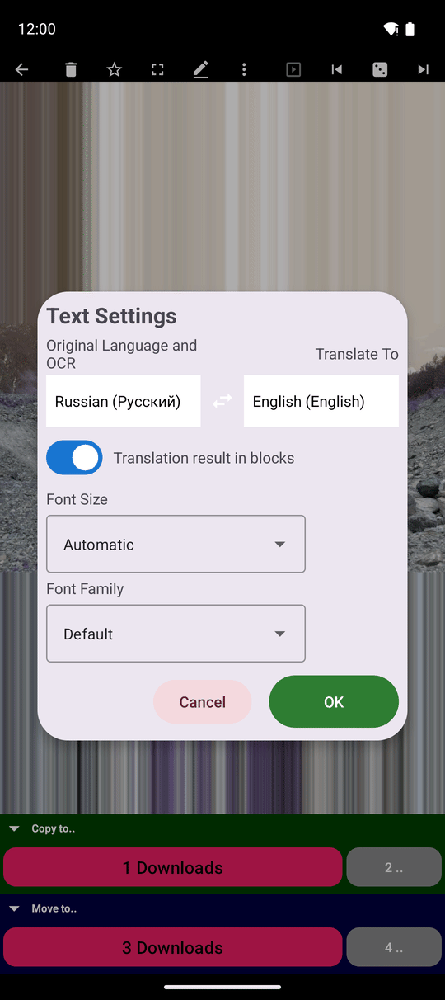
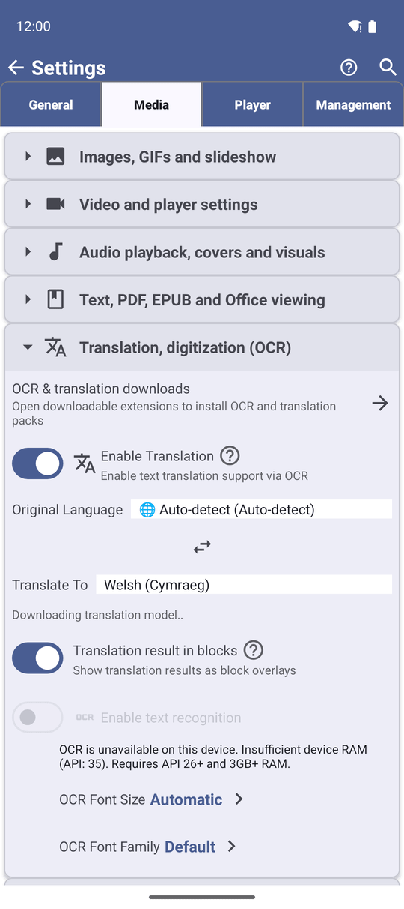

Переклад розпізнаного тексту
Розпізнаний текст, сторінка PDF, розділ EPUB чи текстовий файл читається вашою мовою в один дотик, повністю на телефоні - у власній картці або намальований прямо поверх оригінальних слів.
Чому вам це сподобається
Щойно слова опиняються на екрані - розпізнані з фото, надруковані на сторінці PDF або в розділі EPUB - FastMediaSorter може перекласти їх на вашу мову прямо там, за допомогою офлайн-перекладу ML Kit від Google. Інтернет потрібен лише для одноразового завантаження мовних моделей від Google, а текст, який ви перекладаєте, перекладається на телефоні й нікуди не надсилається.
Дві різні відправні точки живлять той самий перекладач: картинка спершу проходить OCR, щоб з'явився текст для перекладу, а сторінка PDF, розділ EPUB чи текстовий файл уже є текстом і одразу переходять до перекладу.
- FastMediaSorter у редакції з перекладом: Standard, noLegal, Legacy або VR. Редакції Lite, Photos і FOSS текст не перекладають.
- Увімкнене Увімкнути переклад у Налаштуваннях - або на сторінці функцій майстра налаштування. Першого разу це завантажує розширення Модуль перекладу; див. перший запуск і налаштування і додаткові модулі для завантаження.
- Для перекладу картинки: також розширення Модулі розпізнавання тексту, оскільки фото чи скан спершу треба прочитати, перш ніж перекладати - див. розпізнавання тексту на зображеннях.
- Щось для перекладу: картинка, відкрита в перегляді зображень - див. перегляд фото й жести - сторінка PDF, розділ EPUB або текстовий файл.
- Телефон, планшет, ноутбук, настільний комп'ютер або Chromebook. Переклад не пропонується на телевізорі, автомагнітолі чи XR-шоломі - див. останній крок.
Якщо вихідну мову лише вгадали, і більшості з того, що повернулося, не можна довіряти, плашку взагалі не малюють: «Текст написаний письмом, для якого розпізнавання не налаштоване, тому переклад поверх зображення не показано. Виберіть мову оригіналу в налаштуваннях перекладу.» Виберіть мову явно (наступний крок) і спробуйте ще раз.
Перекладіть текст на картинці
Відкрийте меню з трьома крапками й торкніться Перекласти (у горизонтальній орієнтації кнопка може бути прямо на панелі команд). Після «Переклад запущено..» розпізнані рядки повертаються перекладеними в одному з двох вигляді, залежно від налаштування Результат перекладу в блоках:
- Вимкнено - переклад з'являється у власній картці, під картинкою чи над нею, окремо від оригіналу.
- Увімкнено - кожен перекладений рядок малюється прямо поверх оригінальних слів на непрозорій плашці, тож картинка читається вашою мовою на своєму місці. Рядок, чиї слова стоять далеко одне від одного - текст по обидва боки фото, окремі мовні бульбашки - розбивається й перекладається окремими шматками замість однієї смуги через усю картинку. Плашка, що впирається в низ екрана, росте вгору замість того, щоб обрізатися, а переклад, вищий за весь екран, спершу зменшує шрифт, тож завжди намальований повністю.
Сфотографована вивіска крамниці з увімкненим накладенням перекладу, кожен розпізнаний рядок замінено непрозорою плашкою з перекладеними словами.
Перекладіть сторінку PDF або розділ EPUB
Сторінка PDF - зокрема скан без текстового шару, прочитаний тим самим офлайн-проходом OCR - і розділ EPUB перекладаються однаково: відкрийте меню з трьома крапками й торкніться Перекласти. Сторінка PDF дотримується вигляду картка-чи-накладення з кроку вище; розділ EPUB завжди відкривається в панелі зі зміною розміру над текстом, з власним розміром шрифту, окремим від книжки. Про гортання сторінок і пошук кнопки див. читання документів PDF і читання книжок EPUB.
Відкрито книгу EPUB, у меню з трьох крапок натиснуто «Перекласти», мову перекладу задано.
Відкрийте Налаштування тексту й виберіть мови
Відкрийте меню з трьома крапками й торкніться Налаштування тексту, щоб відкрити спільний діалог мов і вигляду для картинок, PDF, розділів EPUB і текстових файлів. Торкніться Вихідна мова та OCR або Перекласти на, щоб відкрити список мов із пошуком, упорядкований за мовою інтерфейсу, з Авто як варіантом для джерела. Кнопка обміну поруч із двома рядками міняє місцями вихідну й цільову мову, коли це має сенс - зручно, коли ви перекладаєте туди й назад між тими самими двома мовами.
Той самий діалог містить Результат перекладу в блоках (перемикач картка-чи-накладення з першого кроку), Розмір шрифту й Шрифт для перекладеного тексту. Підтвердження діалогу також вмикає переклад, якщо він був вимкнений.

Чому другий переклад миттєвий
Уперше, коли ви вибираєте нову цільову мову, FastMediaSorter завантажує її модель перекладу у фоні одразу, як ви її вибрали, а не поки ви чекаєте на результат - ви можете коротко побачити «Завантаження моделі перекладу..», а потім «Модель перекладу готова.». Невдале завантаження показує «Не вдалося завантажити модель перекладу. Спробуйте ще раз.» з кнопкою Повторити.
Сторінка чи картинка, перекладена один раз, лишається перекладеною в пам'яті до кінця сеансу: відкрийте ту саму сторінку знову - і переклад уже там, без повторного розпізнавання й повторного завантаження.

Де переклад не пропонується
Переклад на пристрої ліцензовано для телефонів, планшетів, ноутбуків, настільних комп'ютерів і Chromebook. На телевізорі, автомагнітолі чи XR-шоломі кнопка Перекласти лишається видимою, але вимкненою, з поясненням «Переклад не ліцензовано для цього типу пристроїв», а віджет перекладача й ґаджет лаунчера на цих пристроях узагалі не пропонуються.
Перекладений результат несе невелику позначку авторства Google, яку може прочитати екранний диктор, оскільки сам переклад надає модель Google, що працює на пристрої.
Емулятор телевізора, відкрито картинку, фокус на неактивній кнопці «Перекласти».
Що ви отримаєте
Розпізнаний текст, сторінка PDF, розділ EPUB чи текстовий файл читається вашою мовою без інтернету - у власній картці або намальований прямо поверх оригінальних слів, шрифтом і розміром, який вам до вподоби. Перемикання мов тихо завантажує потрібне у фоні, а переклад тієї самої сторінки вдруге нічого не коштує.
Поради та усунення несправностей
- Ще не розпізнавали жодного тексту? Почніть з розпізнавання тексту на зображеннях.
- Хочете надіслати перекладений текст комусь? Див. надсилання й експорт файлів.
- Читаєте кириличний текст, який постійно виходить неправильно? Виберіть вихідну мову явно замість Авто - див. крок про мови вище й розпізнавання тексту на зображеннях про те, чому Авто може неправильно прочитати кириличні літери.
- Потрібен лише мовний пакет, а не огляд екрана розширень? Переходьте прямо до додаткових модулів і мовних моделей.